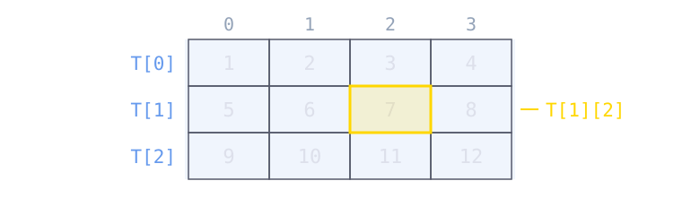

L = [[10, 20, 30], [1, 3]]
print('L[0] =', L[0])
print('L[1] =', L[1])L[0] = [10, 20, 30]
L[1] = [1, 3]Cours 5
Les éléments d’une liste peuvent être de n’importe quel type ; en particulier, ils peuvent être à leur tour des listes.
L = [[10, 20, 30], [1, 3]]
print('L[0] =', L[0])
print('L[1] =', L[1])L[0] = [10, 20, 30]
L[1] = [1, 3]L[i] est la sous-liste d’indice i, et L[i][j] est l’élément d’indice j de cette sous-liste.
Remarque. Les sous-listes L[i] sont parfois appelées les lignes de L.
L = [[10, 20, 30], [1, 3]]
print('L[0][2] =', L[0][2])L[0][2] = 30Pour parcourir tous les éléments, il faut deux boucles for imbriquées : la première parcourt les sous-listes, la seconde les éléments de chacune d’elles.
L = [[10, 20, 30], [1, 3]]
for ligne in L:
for element in ligne:
print(element, end=' ')
print()10 20 30
1 3 Pour créer une liste de listes, on peut commencer par une liste vide à laquelle on append, une par une, les sous-listes.
from random import randint
L = []
for i in range(10):
ligne = []
for j in range(i):
ligne.append(randint(1, 100))
L.append(ligne)
for ligne in L:
print(ligne)[]
[94]
[41, 32]
[2, 86, 62]
[44, 7, 7, 61]
[15, 38, 22, 82, 100]
[46, 30, 19, 24, 71, 54]
[73, 72, 73, 23, 70, 98, 79]
[86, 30, 86, 80, 38, 23, 49, 52]
[14, 16, 94, 20, 82, 6, 84, 10, 29]Une liste de listes est la façon naturelle de représenter un tableau : une liste de m lignes, chacune étant une liste de n éléments.
T[i] est la ligne d’indice i, qui est elle-même une liste ;T[i][j] est l’élément de la ligne i et de la colonne j.
T = [[1, 2, 3, 4],
[5, 6, 7, 8],
[9, 10, 11, 12]]
print('T[1] =', T[1])
print('T[1][2] =', T[1][2])
print(len(T), 'lignes,', len(T[0]), 'colonnes')T[1] = [5, 6, 7, 8]
T[1][2] = 7
3 lignes, 4 colonnesAttention. Une liste de listes n’est pas nécessairement un tableau : il faut que les lignes aient toutes la même longueur.
Transposer un tableau, c’est échanger ses lignes et ses colonnes : la première ligne devient la première colonne, la deuxième ligne la deuxième colonne, et ainsi de suite.
T = [[1, 2, 3], transposée = [[1, 4],
[4, 5, 6]] [2, 5],
[3, 6]]i et de la colonne j de la transposée est T[j][i].2 lignes et 3 colonnes devient donc un tableau de 3 lignes et 2 colonnes.Écrivons une fonction transposer qui retourne la transposée d’un tableau T, sans modifier T : on construit un nouveau tableau, ligne par ligne, avec append.
def transposer(T):
m = len(T)
n = len(T[0])
T_transp = []
for i in range(n):
ligne = []
for j in range(m):
ligne.append(T[j][i])
T_transp.append(ligne)
return T_transp
T = [[1, 2, 3], [4, 5, 6]]
print(transposer(T))[[1, 4], [2, 5], [3, 6]]Nous avons vu que certaines structures en Python sont indexables, c’est-à-dire qu’on peut accéder à l’une de leurs valeurs en les indexant avec un nombre :
agent = ['James', 'Bond', 32]
print('Âge :', agent[2])Âge : 32Cependant, il pourrait être très utile d’avoir une structure qui puisse être indexée par des objets qui ne sont pas des nombres. Une telle structure existe en Python : il s’agit des dictionnaires.
Un dictionnaire (dict) est une structure de données qui permet d’indexer des objets (les valeurs) non pas avec des entiers 0, 1, 2, … mais avec des clés.
Il s’agit d’un ensemble de paires clé: valeur, écrit entre accolades.
agent = {'nom': 'Bond', 'prénom': 'James', 'âge': 32}
print('Âge :', agent['âge'])Âge : 32On peut créer un dictionnaire
d = {} ;d = {clé_1: valeur_1, ..., clé_n: valeur_n}.Les clés peuvent être n’importe quel objet non mutable : int, float, str, bool, tuple… mais pas une liste. Elles doivent également être uniques : si la même clé apparaît plusieurs fois, seule la dernière paire est gardée.
d1 = {1: 123, 2: 345}
d2 = {'a': 123, 'b': 345}
d3 = {(1, 2): 123, (3, 4): 345}
d4 = {True: 123, False: 456}
print(d1[1], d2['a'], d3[(1, 2)], d4[True])123 123 123 123d = {[1, 2]: 123}--------------------------------------------------------------------------- TypeError Traceback (most recent call last) Cell In[12], line 1 ----> 1 d = {[1, 2]: 123} TypeError: unhashable type: 'list'
d = {1: 123, 2: 345, 1: 456}
print(d){1: 456, 2: 345}Remarque. Comme les listes, les dictionnaires sont mutables : on peut les remplir et les modifier après leur création.
On accède à l’élément de clé clé du dictionnaire d avec la syntaxe d[clé], à condition qu’un tel élément existe. Sinon, Python produit une erreur.
d = {10: 'poire', 20: 'pomme'}
print(d[10])poired = {10: 'poire', 20: 'pomme'}
print(d[30])--------------------------------------------------------------------------- KeyError Traceback (most recent call last) Cell In[15], line 2 1 d = {10: 'poire', 20: 'pomme'} ----> 2 print(d[30]) KeyError: 30
Pour éviter l’erreur, on peut utiliser la méthode get : d.get(clé) retourne l’élément de clé clé si un tel élément existe, et retourne None autrement.
d = {10: 'poire', 20: 'pomme'}
print(d.get(10))
print(d.get(30))poire
NoneRemarque. On peut donner à get une valeur par défaut : d.get(clé, défaut) retourne défaut au lieu de None si la clé n’existe pas.
d = {10: 'poire', 20: 'pomme'}
print(d.get(10, 'inconnu'))
print(d.get(30, 'inconnu'))poire
inconnuInsérer ou modifier : d[clé] = valeur insère une nouvelle paire (clé, valeur) si la clé n’existe pas, ou modifie la valeur associée si elle existe déjà.
# Insérer un élément
d = {10: 'poire'}
d[20] = 'pomme'
print('Après insertion :', d)Après insertion : {10: 'poire', 20: 'pomme'}# Modifier un élément
d = {10: 'poire', 20: 'pomme'}
d[10] = 'fraise'
print('Après modification :', d)Après modification : {10: 'fraise', 20: 'pomme'}Supprimer : d.pop(clé) supprime l’élément de clé clé et retourne sa valeur, comme pop sur une liste. Elle produit une erreur si la clé n’existe pas.
# Supprimer un élément
d = {10: 'poire', 20: 'pomme'}
x = d.pop(10)
print('Valeur enlevée :', x)
print('Après suppression :', d)Valeur enlevée : poire
Après suppression : {20: 'pomme'}Appartenance : clé in d vérifie si la clé existe dans le dictionnaire d.
# Vérifier l'appartenance
d = {'pomme': 'malus', 'poire': 'pyrus'}
print('pomme in d :', 'pomme' in d)
print('fraise in d :', 'fraise' in d)pomme in d : True
fraise in d : FalseRemarque. Il n’y a donc pas de méthode append pour les dictionnaires : une simple affectation suffit à ajouter une paire.
Un dictionnaire est un objet itérable. On peut itérer sur ses clés avec une boucle for.
Les éléments du dictionnaire sont alors parcourus dans le même ordre que celui dans lequel il a été rempli.
d = {'Montbenon': 4.2,
'Les Brasseurs': 3.8,
'La Bavaria': 5}
for clé in d:
print(clé)Montbenon
Les Brasseurs
La BavariaParcourir les clés d’un dictionnaire nous donne accès également aux valeurs associées, puisque la valeur associée à clé est d[clé].
d = {'Montbenon': 4.2,
'Les Brasseurs': 3.8,
'La Bavaria': 5}
for clé in d:
print('d[' + clé + '] =', d[clé])d[Montbenon] = 4.2
d[Les Brasseurs] = 3.8
d[La Bavaria] = 5On peut aussi parcourir un dictionnaire d avec les méthodes :
d.keys() : itère sur les clés ;
# Parcourir les clés
d = {'Montbenon': 4.2, 'Les Brasseurs': 3.8, 'La Bavaria': 5}
for nom in d.keys():
print(nom)Montbenon
Les Brasseurs
La Bavariad.values() : itère sur les valeurs ;
# Parcourir les valeurs
d = {'Montbenon': 4.2, 'Les Brasseurs': 3.8, 'La Bavaria': 5}
for note in d.values():
print(note)4.2
3.8
5d.items() : itère sur les paires (clé, valeur), sous forme de tuples.
# Parcourir les paires (clé, valeur)
d = {'Montbenon': 4.2, 'Les Brasseurs': 3.8, 'La Bavaria': 5}
for paire in d.items():
print(paire)('Montbenon', 4.2)
('Les Brasseurs', 3.8)
('La Bavaria', 5)# Décomposer et utiliser les paires
d = {'Montbenon': 4.2, 'Les Brasseurs': 3.8, 'La Bavaria': 5}
for nom, note in d.items():
s = nom + ' : ' + str(note) + ' / 5'
if note >= 4.0:
s = s + ' (top)'
print(s)Montbenon : 4.2 / 5 (top)
Les Brasseurs : 3.8 / 5
La Bavaria : 5 / 5 (top)Remarque. Les objets retournés par keys, values et items sont des objets à part entière (appelés vues), mais ils sont peu utilisés en dehors des boucles for.
On peut créer une liste de manière concise en utilisant la compréhension. La syntaxe est :
L = [exp(var) for var in iter]ce qui est un raccourci pour :
L = []
for var in iter:
L.append(exp(var))où var est une variable, exp(var) est une expression qui peut (ou peut ne pas) contenir var, et iter est un objet itérable (une liste, range, tuple, str, …).
La liste obtenue contient la valeur de exp(var) pour chaque valeur de var dans iter, dans l’ordre.
# Compréhension de liste
L = [2 * i for i in range(5)]
print('Compréhension :', L)
# Méthode traditionnelle
L = []
for i in range(5):
L.append(2 * i)
print('Traditionnelle :', L)Compréhension : [0, 2, 4, 6, 8]
Traditionnelle : [0, 2, 4, 6, 8]L = [c + 'a' for c in 'pizza']
print('Compréhension :', L)
# Méthode traditionnelle
L = []
for c in 'pizza':
L.append(c + 'a')
print('Traditionnelle :', L)Compréhension : ['pa', 'ia', 'za', 'za', 'aa']
Traditionnelle : ['pa', 'ia', 'za', 'za', 'aa']On peut également ajouter une condition dans la compréhension de listes. La syntaxe devient :
L = [exp(var) for var in iter if condition(var)]ce qui est un raccourci pour :
L = []
for var in iter:
if condition(var):
L.append(exp(var))où condition(var) est une expression booléenne qui filtre les éléments de iter : seuls les éléments pour lesquels la condition est True sont inclus dans la liste résultante.
L = [x for x in range(10) if x % 2 == 0]
print('Compréhension :', L)
# Méthode traditionnelle
L = []
for x in range(10):
if x % 2 == 0:
L.append(x)
print('Traditionnelle :', L)Compréhension : [0, 2, 4, 6, 8]
Traditionnelle : [0, 2, 4, 6, 8]Un autre exemple : on extrait toutes les voyelles d’une phrase.
s = "it's the dance of the ducks"
voyelles = [c for c in s if c in 'aeiouy']
print('Compréhension :', voyelles)
# Méthode traditionnelle
voyelles = []
for c in s:
if c in 'aeiouy':
voyelles.append(c)
print('Traditionnelle :', voyelles)Compréhension : ['i', 'e', 'a', 'e', 'o', 'e', 'u']
Traditionnelle : ['i', 'e', 'a', 'e', 'o', 'e', 'u']On peut également utiliser plusieurs boucles dans une compréhension de listes. La syntaxe est :
L = [exp(var1, var2) for var1 in iter1 for var2 in iter2]ce qui est un raccourci pour :
L = []
for var1 in iter1:
for var2 in iter2:
L.append(exp(var1, var2))où var1 parcourt iter1 et, pour chaque valeur de var1, var2 parcourt iter2. L’ordre des boucles dans la compréhension est le même que dans la version traditionnelle avec des boucles imbriquées : la première boucle for est la boucle extérieure.
Dans cet exemple, on combine chaque voyelle avec chaque consonne pour former toutes les paires possibles.
voyelles = ['a', 'o']
consonnes = ['n', 'h']
combis = [v + c for v in voyelles for c in consonnes]
print('Compréhension :', combis)
# Méthode traditionnelle
combis = []
for v in voyelles:
for c in consonnes:
combis.append(v + c)
print('Traditionnelle :', combis)Compréhension : ['an', 'ah', 'on', 'oh']
Traditionnelle : ['an', 'ah', 'on', 'oh']On peut également créer de nouvelles structures dans exp(var1, var2). Ici, on génère tous les tuples (x, y) d’une grille :
coords = [(x, y) for x in range(3) for y in range(2)]
print('Compréhension :', coords)
# Méthode traditionnelle
coords = []
for x in range(3):
for y in range(2):
coords.append((x, y))
print('Traditionnelle :', coords)Compréhension : [(0, 0), (0, 1), (1, 0), (1, 1), (2, 0), (2, 1)]
Traditionnelle : [(0, 0), (0, 1), (1, 0), (1, 1), (2, 0), (2, 1)]La même idée permet de créer un dictionnaire : on écrit des accolades, et une paire clé: valeur à la place de l’expression.
d = {clé(var): valeur(var) for var in iter}ce qui est un raccourci pour :
d = {}
for var in iter:
d[clé(var)] = valeur(var)Le dictionnaire obtenu contient une paire pour chaque valeur de var dans iter.
# Compréhension de dictionnaire
d = {i: i**2 for i in range(1, 6)}
print('Compréhension :', d)
# Méthode traditionnelle
d = {}
for i in range(1, 6):
d[i] = i**2
print('Traditionnelle :', d)Compréhension : {1: 1, 2: 4, 3: 9, 4: 16, 5: 25}
Traditionnelle : {1: 1, 2: 4, 3: 9, 4: 16, 5: 25}mots = ['chat', 'chien', 'oiseau']
d = {mot: len(mot) for mot in mots}
print('Compréhension :', d)
# Méthode traditionnelle
d = {}
for mot in mots:
d[mot] = len(mot)
print('Traditionnelle :', d)Compréhension : {'chat': 4, 'chien': 5, 'oiseau': 6}
Traditionnelle : {'chat': 4, 'chien': 5, 'oiseau': 6}Comme pour les listes, on peut ajouter une condition if pour filtrer les éléments. Ici, on ne garde que les nombres pairs entre 1 et 10, et on associe à chacun son carré :
d = {x: x**2 for x in range(1, 11) if x % 2 == 0}
print('Compréhension :', d)
# Méthode traditionnelle
d = {}
for x in range(1, 11):
if x % 2 == 0:
d[x] = x**2
print('Traditionnelle :', d)Compréhension : {2: 4, 4: 16, 6: 36, 8: 64, 10: 100}
Traditionnelle : {2: 4, 4: 16, 6: 36, 8: 64, 10: 100}Deux mots sont dits semblables lorsqu’ils commencent par la même lettre et ont la même longueur : 'chat' et 'chou' le sont, 'chat' et 'chien' ne le sont pas.
Écrivons une fonction grouper_mots qui prend une liste de mots et retourne un dictionnaire dont chaque valeur est la liste de tous les mots semblables entre eux.
Tout le problème est le choix des clés. La première lettre mot[0] et la longueur len(mot) déterminent à elles seules le groupe d’un mot : le tuple (mot[0], len(mot)) est donc une clé toute trouvée, et c’est bien un objet non mutable.
Chaque valeur est la liste des mots du groupe, qu’il faut créer vide la première fois que sa clé apparaît.
def grouper_mots(mots):
"Regroupe les mots par (première lettre, longueur)"
groupes = {}
for mot in mots:
clé = (mot[0], len(mot))
if clé not in groupes:
groupes[clé] = []
groupes[clé].append(mot)
return groupes
print(grouper_mots(['chat', 'chou', 'chien', 'cube', 'boa'])){('c', 4): ['chat', 'chou', 'cube'], ('c', 5): ['chien'], ('b', 3): ['boa']}mots = ['lion', 'loup', 'lynx', 'lama', 'ours', 'oie', 'lapin']
for clé, groupe in grouper_mots(mots).items():
print(clé, ':', groupe)('l', 4) : ['lion', 'loup', 'lynx', 'lama']
('o', 4) : ['ours']
('o', 3) : ['oie']
('l', 5) : ['lapin']